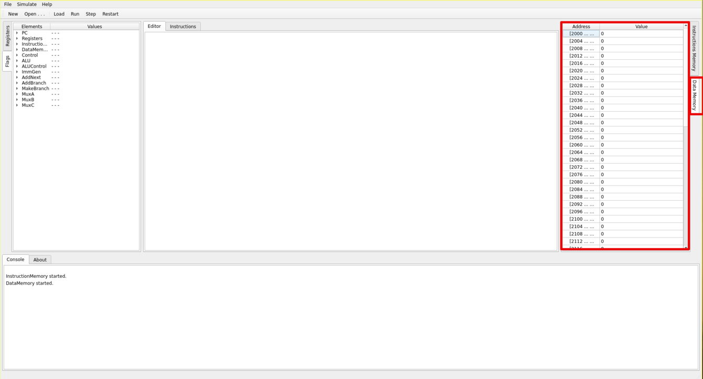

Software desenvolvido como segundo trabalho da diciplina de Organização e Arquitetura de Computadores do curso de Ciêcia da Computação da UNIOESTE, Universidade Estadual do Oeste do Paraná, Campus de Foz do Iguaçu ministrada no ano de 2021, pela professora Fabiana Frata Furlan Peres, pelos alunos Marco A. G. Pedroso, Milena L. dos Santos, Victor E. Almeida
Objetivo
Aplicativo tem como objetivo simular o comportamento de uma máquina RISC-V.
Considerando um conjunto limitado de instruções:
- ADDI
- ADD
- SUB
- AND
- OR
- LW
- SW
- BEQ
- BNE
Instruções para uso
Para a execução do programa é recomendado o uso de um sistema GNU/Linux, preferencialmente da familia de distribuições Arch.
Caso queira compilar o software para outro sistema operacional, faz-se necessário instalar o Qt-creator.
Uma vez iniciada a execução do programa esses são os passos necessários para o uso do Software:
- Abrindo o arquivo
- Selecionando o arquivo
- Carregando as instruções
- Execute passo a passo
Abas do Programa
Partes secundárias da interface gráfica que visam disponibilizar informações valiosas a respeito do atual funcionamento do simulador, tais como:
Registradores: Mostra o conteúdo de cada um dos registradores, implementados na classe Registers.
Flags: Mostra o conteúdo das flags geradas por cada um dos componentes, listadas na ViewMainWindow.
Memória de instrução: Mostra o conteúdo da Memória de instruções, implementada pela classe InstructionMemory.
Memória de Dados: Mostra o conteúdo da Memória de dados, implementada pela classe DataMemory.

Como foi implementado
O caminho de Dados:
O caminho de dados foi implementado de forma igual ao explicado em sala de aula:

Porém para a implementação da instrução BNE, faz-se necessário a inclusão de mais uma "flag", chamada de reverse a qual sai da ALUControl e vai para ALU negando assim o valor da flag "Zero" quando a instrução chamada é a BNE.
Qualquer outra dúvida a respeito de como foi implementada as classes ou o relacionamento entre as mesmas a resposta pode ser encontrada observando a lista de classes e arquivos.
Softwares utilizados para o desenvolvimento:
- Controle de Versão: Git;
- Hospedagem do controle de Versão: Github;
- Linguagem: C++;
- Framework Gráfico: Qt;
- IDE para desenvolvimento: QT-Creator;
- Documentação: Doxygen;
- Hospedagem do Site gerado pela documentação: Github.
Descrevendo a experiência
A realização desse trabalho, como proposto pela professora, permitiu verificar e colocar em prática os conceitos por ela apresentados em sala sobre a implementação monociclo da arquitetura livre RISC-V. Nesse sentido, a continuação são abordados os pontos positivos e negativos relevantes relativos à experiência de criação do simulador.
Pontos positivos:
- O Software atinge o objetivo de simular uma máquina RISC-V;
- O Software representa o simula exatamente o caminho de dados proposto em sala;
- O Software representa cada instrução no nível binário;
- A criação do trabalho permitiu aprofundar os conceitos a respeito da Arquitetura RISC-V, em sua implementação monociclo;
- O Trabalho em grupo permitiu melhorar a capacitade de desenvolver trabalhos complexos como uma equipe;
- Pode-se colocar em prática conhecimentos de engenharia de software, tais como: padrões de projeto, divisão de tarefas, controle de versão.
Pontos negativos:
- No início do projeto hoveram dúvidas a respeito de que caminho seguir com a implementação do projeto, dessa forma, trechos de código implementados de forma diferente, sendo necessário um "merge" no git;
- Escassez de tempo, o que provocou a tomada de decisões que diminuiram o escopo do trabalho, porém mantendo-o dentro das exigências trazidas pela professora;
Dinâmica de trabalho do grupo
Inicialmente foi realizada uma vídeo chamada para definir os componentes a serem implementados no trabalho, prestando atenção as necessidades do mesmo, para dessa forma possibilitar o trabalho paralelo dos estudantes, dessa forma estabeleceu-se metas e prazos que permitissem no final do prazo ter o trabalho realizado.
Porém houve divergência quanto a implementação das instruções, motivo pelo qual até certo ponto do trabalho foram mantidas duas versões diferentes, tentando decidir qual delas se adaptava melhor às exigências do mesmo.